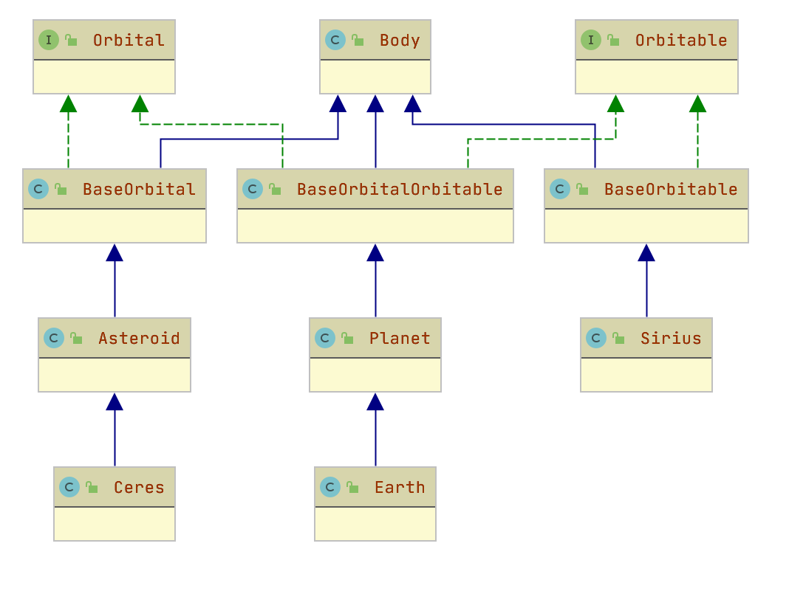

I can't find a solution to this inheritance problem. I'm working on a program which will store information about celestial bodies. I have an abstract superclass, Body, from which all other celestial bodies should inherit. Now, I want some bodies to have implementation by default for storing information about orbiting bodies; some bodies should be Orbitable and some should be Orbital. e.g. a Star is orbitable only, a Planets and Moons are both orbitable and orbital, and an Asteroid is orbital only.
public abstract class Orbital {
Body host;
protected double avgOrbitalRadius;
protected double orbitalPeriod;
public double getOrbitalRadius(){return this.avgOrbitalRadius;}
public double getOrbitalPeriod(){return this.orbitalPeriod;}
}
public abstract class Orbitable {
List<Body> satellites = new ArrayList<>();
public void addSatellite(Body sat){
satellites.add(sat);
}
public boolean hasSatellite(Body sat){
for(Body body : satellites){
if(sat.equals(body)) return true;
}
return false;
}
public boolean hasSatellite(String satName){
for(Body body : satellites){
if(satName.equals(body.getName())) return true;
}
return false;
}
public Body getSatellite(String satName){
for(Body body : satellites){
if(satName.equals(body.getName())) return body;
}
return null;
}
}
I need to have objects be able to inherit one, both, or neither of the above implementations (plus the Body superclass which describes the foundation for any celestial body). I've tried using interfaces with default methods but the key problem is that the implementation involves reading or modifying the object's state, which cannot be implemented with interfaces because all variables in an interface are implicitly static.
I've also viewed this and this post about very similar issues, but the inheritance of state is causing me grief.
So, how can I solve this multiple inheritance problem? Is it even possible in Java? Are there other designs that could circumvent this problem? Thanks.
| 1 | I suggest you learn about the Galactic year. - Elliott Frisch 6 May 2020 at 00:39 |
Orbitable and Orbital, that define (but obviously do not implement) methods for the state manipulations you want to have.Create three (abstract) classes
OrbitableBody extends Body implements OrbitableOrbitalBody extends Body implements OrbitalOrbitableOrbitalBody extends Body implements Orbitable, OrbitalAnd make those three classes realize the methods from the interfaces.
Body, OrbitableBody, OribtalBody or OrbitableOrbitalBody.They will then all be a Body, implement the correct interfaces, and inherit default implementations for the interface-defined methods.
So OrbitableOrbitalBody will just repeat all the code from OrbitalBody and OrbitableBody and every change you make you will need to remember to make in both? - Oleg 6 May 2020 at 00:58 |
|
Well, you could make OrbitableOrbitalBody extends OrbitableBody implements Orbital or the way around, then you'd only have to repeat a part of it. But avoiding duplication entirely is impossible in Java. While Java has Traits in the form of default implementations in interfaces, it does not have non-static properties in interfaces, so this will not work for the OP. - Johannes H. 6 May 2020 at 01:03 |
|
@Oleg - there is a way around that by using default methods in interfaces. Depending on your other needs sometimes abstract base classes with final methods in combination with default interface methods can help. - Stephen P 6 May 2020 at 01:04 |
|
| @StephenP See my comment - while Java does have default implementations for methods, you cannot specify default properties in intrefaces, so you can't store any state. - Johannes H. 6 May 2020 at 01:06 | |
| So the solution is to add another layer of abstraction? As a student, I haven't yet had to create large hierarchies like this, so this is a novel solution to me. Thank you! - Octa 6 May 2020 at 01:15 | |
| 1 | in Java, yes, this is the only solution for this kind of problem. Other concepts, such as fully-featured traits for example, do exist, but java has not implemented them. - Johannes H. 6 May 2020 at 01:19 |
| 1 | @Octa: @JohannesH. has designed a very good OOP solution for your need. As they have suggested, you can definitely take advantage of default methods right in the interfaces (e.g. rotate(), move()). Something that did not exist in the early days of Java when a lot of OOP knowledge-base was being explored. - nabster 6 May 2020 at 01:29 |
 Let me approach this classic object oriented pattern problem with some visual help.
I would have two interfaces namely:
Orbitable
Orbital
Then a base class Body. You can make it concrete or abstract depending on your implementation details. For example you can add behaviors like does it have an atmosphere? in the form of method hasAtmosphere(). This can be abstract first and then have your implementing classes override this.
Then I will have two additional sub-classes extending Body and implementing each interface (remember interface separates responsibility by providing contracts for behaviors)
BaseOrbitable
BaseOrbital
BaseOrbitalOrbitable
Finally some concrete (sub-classes) implementation examples:
public class Earth extends Planet {
}
or
public class Ceres extends Asteroid {
}
or
public class Sirius extends BaseOrbitable {
}
Johannes H. answer is relatively simple and might be a good solution. It has a problem of code duplication though. Instead I suggest to think of Orbital and Orbitable as something your celestial bodies have and use composition and delegation:
class Body {
}
interface Orbital {
public double getOrbitalRadius();
}
interface Orbitable {
public void addSatellite(Body sat);
}
// Default common implementation, shouldn't be abstract
class OrbitalImpl implements Orbital {
protected double avgOrbitalRadius;
public double getOrbitalRadius(){return this.avgOrbitalRadius;}
// ...
}
class OrbitableImpl implements Orbitable {
List<Body> satellites = new ArrayList<>();
public void addSatellite(Body sat){satellites.add(sat);}
//...
}
class OrbitableOrbitalBody extends Body implements Orbitable, Orbital {
Orbitable orbitable;
Orbital orbital;
public OrbitableOrbitalBody() {
orbitable = new OrbitableImpl();
orbital = new OrbitalImpl();
}
public OrbitableOrbitalBody(Orbitable orbitable, Orbital orbital) {
this.orbitable = orbitable;
this.orbital = orbital;
}
@Override
public double getOrbitalRadius() {
return orbital.getOrbitalRadius();
}
@Override
public void addSatellite(Body sat) {
orbitable.addSatellite(sat);
}
}
class OrbitableBody extends Body implements Orbitable {
Orbitable orbitable;
// Use default implementation
public OrbitableBody() {
orbitable = new OrbitableImpl();
}
// If needed use orbitable that behaves differently
public OrbitableBody(Orbitable orbitable) {
this.orbitable = orbitable;
}
// delegate to orbitable
@Override
public void addSatellite(Body sat) {
orbitable.addSatellite(sat);
}
}
// Same as Orbitable
//class OrbitalBody extends Body implements Orbital {
| I like this solution too. So, because you can't extend multiple classes, instead you possess instances of those classes to utilize both their implementations. I like it, it's just weird to think of properties as something that are possessed rather than intrinsic. As for addressing code duplication though, it seems like one would still have to provide implementation for all three implementing classes? E.g addSatellite to both OrbitableBody and OrbitableOrbitalBody. How does this solution deal with code duplicarion and, as you mentioned, the problem of needing to make changes in multiple places? - Octa 6 May 2020 at 07:08 | |
The only thing that is duplicated is a one line delegated method call. This is something you usually need to do only once and if there will be a change in the contract (Orbitable) you will know exactly what changes you need to make because you will get compilation errors. The actual implementation is in OrbitableImpl and it's not duplicated. - Oleg 6 May 2020 at 10:50 |
{kind=link}